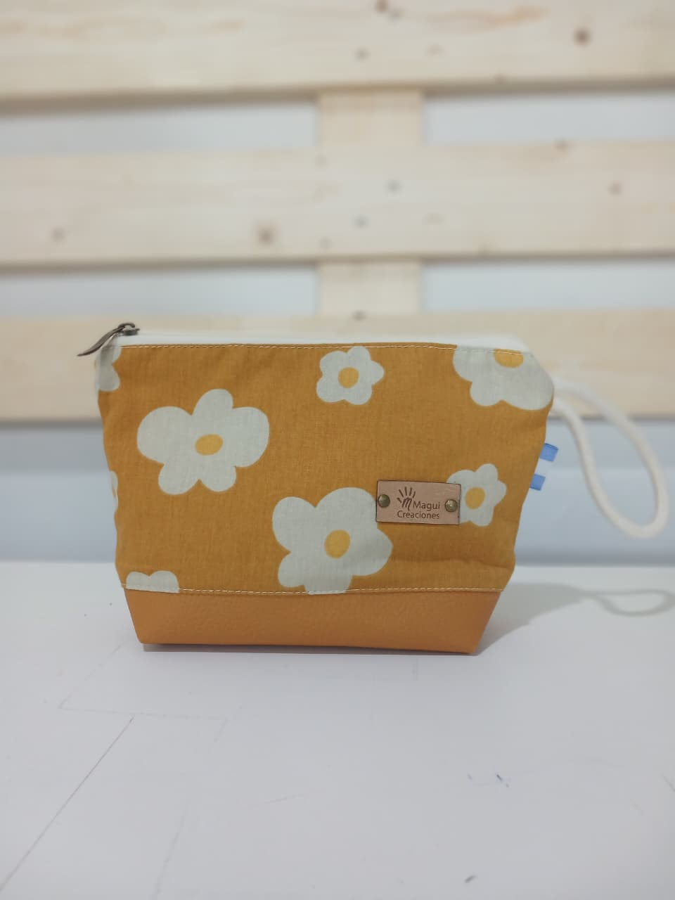

Set matero · Cerámica y alpaca
Set Amancay
Mate de cerámica esmaltada, bombilla de alpaca y funda de lino a juego.
ConsultarTodo lo que tejemos y cosemos en el taller, organizado por categoría. Las fotos reales de cada pieza se suman a medida que se van fotografiando.
Para el día a día: tejidos y cosidos a mano, en lino, algodón y cuero natural.

Tote grande de lino con doble manija de cuero curtido natural. Tela y cuero ecológico. Impermeables por dentro. Con bolsillos en ambos laterales.
Ver producto
Tote estructurado de algodón grueso, con base reforzada. Tela y cuero ecológico. Impermeables por dentro. Con bolsillos en ambos laterales.
Ver producto
Bolso chico y liviano, práctico para llevar lo esencial a mano. Tela y cuero ecológico. Impermeables por dentro. Con bolsillos en ambos laterales.
Ver productoKits completos para cebar como corresponde: mate, bombilla y accesorios a juego.
Mate de cerámica esmaltada, bombilla de alpaca y funda de lino a juego.
ConsultarMate de calabaza forrado en cuero con bombilla plegable, ideal para salir.
ConsultarUn set simple y prolijo para quienes recién empiezan a tomar mate.
ConsultarTodo lo que necesitás para llevar tu mate a cualquier lado, organizado y a mano.
Bolso matero tejido en yute con bolsillos internos para termo y mate.
ConsultarVersión chica del matero, en lino teñido con pigmentos naturales.
ConsultarYerbera de lona encerada con cierre hermético, mantiene la yerba fresca.
ConsultarFunda de cuero con correa para llevar el mate colgado, sin manos ocupadas.
ConsultarCosmética natural hecha en pequeños lotes, con ingredientes simples y trazables.
Aceite facial 100% puro, prensado en frío, para nutrir e iluminar.
ConsultarTónico en spray con agua floral de lavanda, refresca y calma.
ConsultarManteca corporal 100% natural, textura rica para piel muy seca.
Consultar